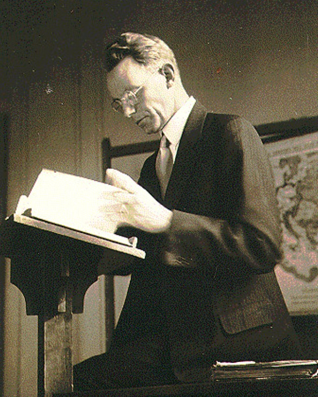

Reconsidering the Legitimacy of Classical and Evidential Arguments from a Presuppositional Perspective
November 24, 2025

This was a final paper for a class on Christian apologetics taught by Dr. Timothy Paul Jones at SBTS.
Apologetics, or the defense of the Christian faith, has been practiced by the church ever since the earliest days of Christianity as Christians have sought to defend their faith against the unbelieving attacks of the world and to persuade others towards faith in Christ. Prior to the twentieth century, apologetic approaches that attempted to rationally argue for the truth of the Christian faith could be loosely separated into the categories of classical apologetics and evidential apologetics. Classical apologetics seeks to deductively argue for the existence of the Christian God on the basis of logical reasoning from shared first principles. Evidential apologetics seeks to inductively argue for the historicity of the Christian faith on the basis of empirical evidence.
However, the work of Cornelius Van Til in the twentieth century led to the formation of a new school of apologetic thought. In an effort to make their apologetic approach more consistent with Protestant Reformed theology, especially concerning the self-attestation of Scripture and the noetic effects of sin in the rational and evidence-interpreting life of the unbeliever, these apologists rejected the basic premises of both classical and evidential apologetics. Labelled as “presuppositionalists,” these apologists held that believers and nonbelievers were separated by radically different fundamental presuppositions, and they criticized classical and evidential approaches for attempting to argue for the Christian faith on the basis of shared presuppositions about reality. They also criticized classical and evidential approaches for attempting to place God “in the dock” [
1] by subjecting Scripture to human standards of reason and evidence.
There is much to commend in presuppositional apologetics, especially its fidelity to Reformed theological principles and its acknowledgement of God’s total authority and lordship. However, in this paper I will argue that classical and evidential arguments are fully compatible with the theological commitments of presuppositionalism and that presuppositionalists are wrong to exclude them. First, I will argue this by showing that classical and evidential arguments for the Christian faith are simply internal critiques of nonbelieving worldviews—the very strategy espoused by presuppositionalists. Second, I will argue that Scripture’s self-attestation does not restrict an apologist from appealing to other grounds in public argumentation, whether rational or evidential. Therefore, though presuppositionalists are right to suggest that reason and evidence are insufficient for serving as the ultimate basis for faith, this does not mean that they cannot serve as legitimate starting points in apologetic discussions.
Defining Classical and Evidential Apologetics
First, it is helpful to define classical and evidential apologetics for the sake of this discussion. Classical apologetics is sometimes defined as a two-step approach that uses rational arguments based on logic and nature to establish the existence of God and then uses historical evidence to argue for the plausibility of the Christian faith. [
2] On the other hand, evidential apologetics is a one-step approach that uses evidence, both miracles and fulfilled prophecy, to defend the truth of Christianity. [
3] Clearly, there is much in common—the only thing that separates the two is the use of classical arguments for theism.
Common classical arguments for the existence of God include some of the arguments first put forth by Thomas Aquinas, perhaps the most iconic exponent of the classical apologetic system, whose “five ways” sought to demonstrate the existence of God based on simple arguments grounded in premises that all people hold to be true. [
4] On the other hand, most evidential arguments for the Christian faith are grounded in the well-attested historicity of the resurrection. One such evidentialist was John Warwick Montgomery, who approached the issue of the resurrection from a legal standpoint, arguing that the eyewitness testimony of the resurrection would hold up even to modern standards of judicial scrutiny. [
5]
The examples of Thomas Aquinas and J. W. Montgomery already give us some hints as to how classical and evidential apologetics would clash with presuppositional apologetics, given both of their use of
common ground in dialogue with believers—with Aquinas using commonly held notions of rationality and Montgomery using commonly held notions of legal and historical verifiability. However, before turning to a definition of presuppositional apologetics, it is helpful to first examine the theological foundations of presuppositionalism.
Theological Foundations for Presuppositional Apologetics
Presuppositionalism originated with Cornelius Van Til, who, upon becoming professor of apologetics at the newly founded Westminster Seminary, revised the apologetics curriculum to better align with the Reformed theological tradition. In his view, the apologetics of Old Princeton was in many ways inconsistent with their Reformed theology, especially concerning the self-attestation of Scripture and the universal knowledge of God possessed and suppressed by every man. As K. Scott Oliphint writes, “Van Til pioneered a merger of Reformed theology with apologetics that had been, by and large, only inchoate and undeveloped since the time of the Reformation.” [
6] Therefore, it is impossible to attain a proper understanding of the presuppositional approach to apologetics without first an understanding of the Reformed view of the authority of Scripture and man’s knowledge of God.
The Self-Attesting Authority of God’s Word
The orthodox Reformed understanding of Scripture is thoroughly Protestant: Scripture alone can attest to its own authority—not the church and not higher principles of reason or evidence—because Scripture is God’s word and there is no higher authority than God. As Stephen Wellum writes,
No finite created thing is self-attesting; only God is. Thus, only God can identify his word and speak for his creatures on his own authority (cf. Heb 6:13). To think otherwise is to elevate some created thing to the status of God himself and to deny Scripture’s own teaching regarding the Creator-creature distinction. In fact, it is to appeal to something “outside” (i.e., extratextual) of God’s word as more authoritative than him, hence people think that this “outside” standard can stand in judgment of Scripture. [
7]
In the life of the believer, the truthfulness of Scripture is assured not through reason or evidence but by the testimony of the Holy Spirit. Herman Bavinck writes, “Though proofs and reasonings are of great value, this testimony [of the Spirit] surpasses them by far; it is more excellent than all reason.” [
8] It is for this reason that most Reformed theologians have held a negative view of classical and historical arguments for the truth of Christianity. If reason or evidence is allowed to be the ground of faith, then God and his word are being subjected to a supposedly higher authority. Bavinck writes, “If Christian revelation, which presupposes the darkness and error of unspiritual humanity, submitted in advance to the judgments of reason, it would by that token contradict itself.” [
9] Louis Berkhof writes, “Reason is accorded the right to examine and explain the credentials of revelation, and is thus placed above Scripture. For that reason this method [of historical apologetics] stands condemned from a theological point of view.” [
10]
Some argue that this doctrine of self-attestation inevitably leads to a form of circular reasoning, where we assume the truthfulness of Scripture in trying to show the truthfulness of Scripture. This is a serious claim, but as Wellum points out, “When it comes to ultimate criterions in anyone’s worldview, an argument of this sort is unavoidable, and if we think otherwise, we are not honest with how epistemological warrant functions in worldview discussions.” [
11] Murray explains, “It is fully admitted that normally it would be absurd and a miscarriage of justice for a judge to accept the testimony of the accused rather than the verdict required by all the relevant evidence. But the two cases are not analogous. There is one sphere where self-testimony must be accepted as absolute and final. This is the sphere of our relation to God.” [
12]
Universal Knowledge of God
The concept that all men have an innate knowledge of God through general revelation is most clearly found in Romans 1:18–32, where Paul explains that all men are morally culpable for their failure to worship God due to God’s abundant revelation of himself “in the things that have been made.” This concept was fleshed out further by Calvin in his
Institutes, where he called this the
sensus divinitatis. [
13] This alone is not a controversial topic in orthodox Reformed theology, but presuppositionalists take this to mean that nonbelievers do not need more
information about God, as if rational argumentation and historical evidence would be sufficient in bringing them to faith. Rather, unbelievers need to be shown the folly and futility of their own suppression of the truth about God in the things that they have already been shown. James Anderson writes, “Apologetics, then, does not so much aim to show skeptics what they don’t know as to expose the fact that they already inescapably know God, even while they suppress and deny that knowledge.” [
14] Oliphint explains, “The problem with an evidential approach . . . [is that] if all people know God by virtue of everything that he has made (and thus everything that confronts them, both internally and externally), then the problem is not with the evidences.” [
15] Some presuppositionalists, such as Greg Bahnsen, go so far as to criticize the use of evidence altogether: “God’s word is sufficient in giving the sinner the necessary witness which can lead him to conversion; if he will not hear the inspired word of God, neither will he be moved by a human argument for the resurrection.” [
16]
The “Antithesis” between Believer and Unbeliever
Another key Reformed concept that surfaces in the presuppositional approach is the idea that there is no neutrality between the believer and the unbeliever. There is a fundamental “antithesis” between those who believe and those who don’t, because what separates the two is the regeneration of the heart leading to faith in God. This antithesis plays itself out not only in how the two groups of people respond to God’s revelation, but also in how they perceive and interpret the world around them. This is where the concept of “presuppositions” comes into play. Unbelievers interpret the world through radically different presuppositions, because they are dead in their trespasses and enemies of God. Therefore, in engaging unbelievers, the apologist cannot ignore this fundamental hostility to God in their worldview commitments. As Anderson explains,
There is a fundamental antithesis between believers and unbelievers, in terms of both their spiritual orientation and their epistemological commitments. Unbelievers are in rebellion against God, they suppress the truth about God, and they do not submit to the authority of Christ and his word. Believers are reconciled to God, they embrace the truth about God, and they submit to the authority of Christ and his word. Any approach to apologetics that fails to recognize this basic antithesis is misdirected. [
17]
Along with the understanding that all people receive God’s revelation, it is the fundamental spiritual antithesis between believer and unbeliever that leads presuppositionalists to reject “neutral” argumentation in apologetic discussions. According to presuppositionalists, unbelievers do not need more rationality or more evidence—“the only way the spiritually dead can rise is through the life-giving power of the truth of Scripture.” [
18]
The Lordship of Christ
Finally, though this is sometimes overlooked, the concept of Christ’s lordship over all things also features prominently in presuppositionalist thought. As John Frame helpfully reminds us, “In apologetics, as in every aspect of the Christian life, the most important thing is to glorify God.” [
19] Therefore, presuppositionalists conclude that apologetics should not be done in submission to non-Christian intellectual frameworks. They criticize classical and evidential apologists for acceding to non-Christian presuppositions in finding supposed common ground with nonbelievers, without recognizing that, as Anderson puts it, “One is either reasoning under the lordship of Christ or reasoning in rebellion.” [
20] To quote Frame again, “To tell the unbeliever that we can reason with him on a neutral basis, however that claim might help to attract his attention, is a lie. Indeed it is a lie of the most serious kind, for it falsifies the very heart of the gospel—
that Jesus Christ is Lord.” [
21] Therefore, presuppositional apologetics is, for presuppositionalists, not only a matter of rational coherence with Reformed theology but also a matter of obedience to God and reverence for the absolute lordship of Christ over all things, including dialogue with unbelief.
Key Distinctives of the Presuppositional Approach
Now, having gone through several important theological foundations for presuppositionalism, we are able to examine two of its most important practical distinctives. The first principle is a negative principle: apologists should not and cannot engage with unbelievers on neutral ground. The second principle is a positive principle: instead, apologists should seek to deconstruct the false presuppositions of unbelievers by demonstrating that they are inconsistent and point them to the only set of presuppositions that can adequately make sense of reality, the Christian faith. In this discussion, it is important to note that, unlike classical and evidential apologetics, presuppositionalism is less of an apologetic “approach” that comes ready-packed with arguments and more of an apologetic “framework” with certain principles that should be followed. [
22]
No Neutrality
First, as has been made clear previously, presuppositionalists reject any apologetic argument that condescends to unbelieving presuppositions of rationality or evidence. This has to do with the inherent self-attestation of Scripture, the necessity of interpreting evidence and argument from a Christian perspective, and the lordship of Christ. Any attempt to claim neutral common ground with an unbeliever is misguided, due to the epistemological antithesis between believer and unbeliever. Therefore, when the apologists seeks to find common ground, they are, in reality, working from non-Christian presuppositions. As Frame writes, “Even if neutrality were possible, that route would be forbidden to us. When I oppose neutrality, what I oppose is appealing to something other than God’s revelation as the ultimate standard of truth.” [
23]
Although presuppositionalists do not reject the use of evidence, they reject the interpretation of evidence with non-Christian presuppositions or standards of truth and verifiability. This is in contrast with the classicalist and the evidentialist, who “[seek] to employ methods that are in principle acceptable to non-Christians as a means of convincing them of the truth of Christianity” [
24]—methods such as empiricism in the case of the evidentialist and rationalism in the case of the classicalist. For presuppositionalists, evidence can and should be used, but never, according to Anderson, “as though they can be rightly interpreted from the biblical theistic worldview.” [
25]
However, due to the presuppositionalist belief in “no neutrality,” evidence typically does not play a significant factor in presuppositionalist arguments. Instead, presuppositionalists, true to the name, tend to argue more on the level of worldview and presuppositions, seeking to show through transcendental arguments that only Christian presuppositions can make logical and coherent sense of universal things such as rationality, language, or truth. As Van Til himself wrote, “Every bit of historical investigation . . . is bound to confirm the truth of the claims of the Christian position. But I would not talk endlessly about facts and more facts without ever challenging the non-believer’s philosophy of fact.” [
26]
Furthermore, it is important to note that some presuppositionalists, such as Frame, have a more positive view of evidence than Van Til and others, though the principle of “no neutrality” is upheld. Frame writes, “We do not reject the use of evidences, even the use of theistic proofs. We only insist that these be scriptural arguments—that is, arguments that appeal to scriptural criteria.” [
27]
Internal Worldview Critique
Positively, presuppositionalists seek to make arguments that demonstrate the inconsistency of unbelieving presuppositions from within. Anderson summarizes,
Precisely because there is no worldview-neutral standpoint for adjudicating between worldviews, the way to vindicate the Christian worldview over against any competing non-Christian worldview is to subject each one to an internal critique, on its own terms, to see whether it can account for the very things its proponents rely on in defense of their position: the existence of objective truth and moral values, the laws of logic, the laws of nature, the general reliability of our cognitive faculties, and suchlike. [
28]
There is no presupposition-less standpoint from which one can determine which presuppositions are correct. If that were the case, these presuppositions would not be presuppositions. Theologically, this comes from the self-attestation of Scripture, and it is a logical corollary of the previous section. For presuppositionalists, it is impossible to prove the truthfulness of the Scriptures from first principles, because Scripture is the first principle. Therefore, the only valid argument that can be made is an internal critique—assuming the truth of a specific set of presuppositions and seeing whether they can properly make sense of reality. The aforementioned transcendental argument for God (TAG) is one such presuppositional argument, where it is argued that non-Christian presuppositions cannot make sense of basic universal realities such as logic, language, and truth. As Bahnsen writes, “We never go over to our opponents foundation except to do an internal critique of it; our weapons are not forged by the enemies of God but by the Spirit of God.” [
29]
Alleged Conflicts Despite Genuine Concord
Having laid down the theological foundations for presuppositional apologetics, I will now address the main argument of this paper, which is that presuppositionalists are wrong, based on their own principles, to exclude classical and evidential arguments for Christian theism. To be clear, I am in agreement with all the fundamental
theological premises of presuppositionalism, but I believe that presuppositionalists are wrong to set themselves against classicalists and evidentialists. Rather, I believe that, in practice, classical and evidential arguments are fully compatible with the theological commitments of presuppositionalism that I have outlined above.
The Issue of “No Neutrality”
First, presuppositionalists are correct to state that there is no neutral ground when it comes to interpreting rational arguments and historical evidence. However, this is not a controversial statement. Evidentialists like Gary Habermas can write in response to presuppositionalists like Frame, “Frame rightly attacks the notion of neutrality. . . . It is impossible to lay one’s beliefs aside and study the pure evidence without respect to a particular outlook.” [
30]
So, the issue is not whether there is neutral ground or not. The issue is whether Christian apologists should accede to unbelieving standards of truth and verifiability in seeking to make a case for Christian faith. Presuppositionalists do not think so, but this is inconsistent with their insistence on performing internal worldview critique. Isn’t arguing for the truth of Christian faith from nonbelieving presuppositions in itself a form of internal worldview critique? For instance, if I am an evidentialist dialoguing with a skeptic who doesn’t believe in miracles, I may adopt some of the skeptic’s standards for truth and historical veracity, such as multiple eyewitness testimony and early historical consensus. But if I am able to successfully demonstrate to him that the resurrection may have actually happened on the basis of his own criteria for truth, then have I not successfully gotten him to see the inconsistency of his own presupposition that miracles are impossible? This is really a form of equivocation on the part of the presuppositionalist. When framed in a certain light, this looks like an inappropriate case of “adopting unbelieving presuppositions,” but when framed in a different light, this is “internal worldview critique.” In a certain sense, are these two not one and the same?
A similar argument can be made for classical apologetics. Classical apologists use universally held notions of reason and rationality to argue for the existence of God. In some sense, as the presuppositionalists would say, this is attempting to reason for the existence of God from unbelieving presuppositions. But could it not be argued that this is simply an attempt to demonstrate the internal inconsistency of unbelieving presuppositions? That even basic presuppositions of logic and rationality held by unbelievers must inevitably violate their presupposition that God does not exist? Both classical and evidential arguments are simply a form of internal worldview critique, which is exactly what presuppositionalists are trying to do.
The Issue of Self-Attestation
Second, presuppositionalists are wrong to exclude classical and evidential arguments because they misunderstand the role of the doctrine of self-attestation in the defense of the faith. Although it is true that Scripture attests to its own authority and that the
ultimate ground of faith should not found in mere reason or evidence but only in the authority of God himself, that does not mean that reasons and evidence cannot be used as public witnesses and testimonies to the truth of Christianity. There is a difference between the ground of one’s own personal faith and the ground of an argument meant for the public defense of the gospel. One should not be to the exclusion of the other.
Presuppositionalists might criticize this as some form of “putting God in the dock,” where the truthfulness of God is wrongly being subjected to human standards of reasoning. But, similar to the previous section, could I not also simply paint this as exposing the
irrationality of unbelievers in failing to recognize God’s existence when the evidence and reasoning is so clear, even when held to their own standards? Once again, isn’t this exactly what presuppositionalists are trying to do?
Finally, on a somewhat separate note, Paul Feinberg helpfully points out in a response to John Frame that rational arguments for God are not necessarily opposed to God’s self-attestation: “[Rationality] is rooted or grounded in God himself. It is not as if it is external to God, limiting him in some way.” [
31] This is a potentially helpful corrective to the presuppositionalist’s aversion to rational argumentation for God’s existence, although how this notion interacts with the Reformed doctrine of self-attestation is a separate question that is outside the scope of this paper.
Conclusion
In this paper, I have given an overview of presuppositional apologetics, both its theological foundations and its practical distinctives, and my argument has been that classical and evidential arguments for Christian theism are fully compatible with the Reformed theological commitments of presuppositionalism. Ultimately, in excluding classical and evidential arguments, presuppositionalists have neglected two facts: first, that classical and evidential arguments are themselves forms of internal worldview critique, and second, that the self-attestation of God does not exclude rational and evidential argumentation because there is a difference between the ultimate ground of faith and the ground of argument in public discussions with unbelievers.
Interestingly, it is worth mentioning that even presuppositionalists such as Frame seem to acknowledge this fact. As Frame has made larger and larger allowances for classical and evidential arguments in his presuppositionalist framework, even he concedes:
It may no longer be possible to distinguish presuppositional apologetics from traditional apologetics merely by externals—by the form of argument, the explicit claim of certainty or probability, and so forth. Perhaps presuppositionalism is more an attitude of the heart, a spiritual condition, than an easily describable, empirical phenomenon. [
32]
This seems to be an indication that the divide between presuppositional and classical/evidential apologetics is less entrenched than it has previously been made out to be. Perhaps this is a good thing for the practice of apologetics, as in the defense of the faith we ought to seek to maximize rather than minimize the weapons that are at our disposal.